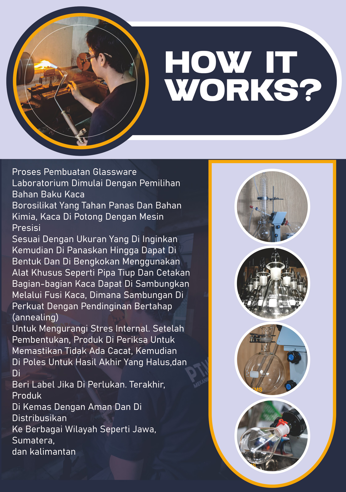
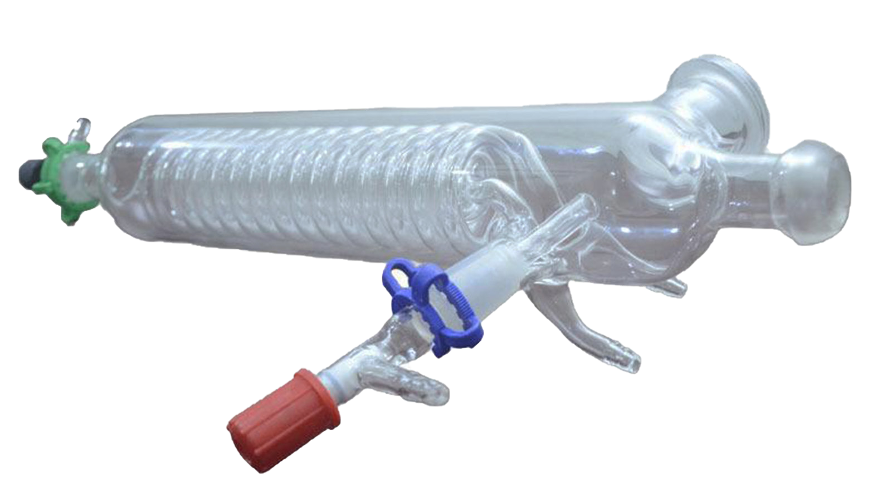

DOKUMENTASI PROYEK INDUSTRIFoto proyek akan dilengkapi
Peralatan untuk distilasi sawit
Pengadaan alat laboratorium untuk kebutuhan proses distilasi minyak sawit.
Kenali PT Mekanikal Glass Analitik. Kami melayani pembuatan alat kaca laboratorium dan kebutuhan glassware custom untuk berbagai penggunaan.
Alat kaca untuk laboratorium
Konsultasi sesuai spesifikasi
Untuk industri dan pendidikan
Berbasis di Bandung, PT Mekanikal Glass Analitik bergerak dalam pembuatan alat kaca laboratorium untuk kebutuhan riset, pendidikan, dan industri.
Perjalanan usaha berawal dari CV Karya Mekanikal Scientific yang berdiri pada 2006. Pengalaman tersebut menjadi bagian dari perkembangan perusahaan hingga saat ini.
Kenali Kemampuan Kami →Berawal dari CV Karya Mekanikal Scientific

Proses yang dijelaskan dalam profil perusahaan mencakup pemilihan bahan, pembentukan, penyambungan, annealing, dan pemeriksaan hasil pengerjaan.
Pemilihan bahan borosilikat
Pembentukan dan penyambungan
Annealing dan pemeriksaan
Contoh pekerjaan dalam profil perusahaan, dari kebutuhan industri hingga kegiatan pendidikan.
Pengadaan alat laboratorium untuk kebutuhan proses distilasi minyak sawit.
Pengadaan alat penunjang pembelajaran sains untuk Dinas Pendidikan Sumedang.
Nama dan logo rekanan terpilih akan ditampilkan setelah persetujuan publikasi.
Diskusikan kebutuhan alat dan spesifikasi penggunaannya.
Konsultasi Produk ↗
Glassware sesuai kebutuhan penggunaan di laboratorium.
Konsultasi Produk ↗Mulai dari ukuran, fungsi, dan kebutuhan yang Anda perlukan.
Diskusikan Desain ↗Ceritakan kebutuhan Anda.
Bahas detail dan penawaran.
Sepakati desain pengerjaan.
Pengerjaan dan pemeriksaan.
Atur pengiriman bersama.
Tim kami siap berdiskusi tentang produk, spesifikasi, dan kebutuhan glassware custom Anda.